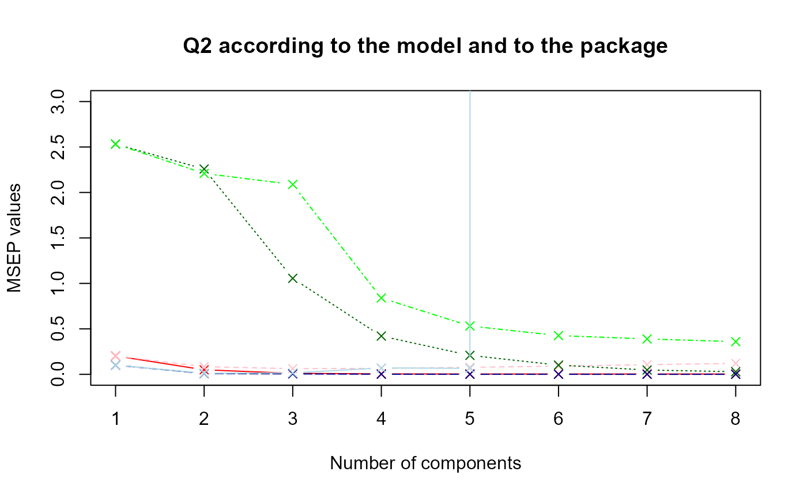

PLS performance
2025-07-30
PLS_perf_msep.RmdIntroduction
This page presents an application of the PLS performance assessment. The PLS method is a quite particular method : there are several predictions according to the number of components selected in the model. The goal is almost to choose the best number of component in PLS regression in order to compute the best possible predictions. For that, we will use three datasets:
one is a dataset with only one response variable .
the other is a dataset with four response variables .
the last dataset contains real data about NIR spectra.
The goal is also to compare the
values with the ones of an other package : mixOmics.
To access to predefined functions from sgPLSdevelop package and manipulate these datasets, run these lines :
library(sgPLSdevelop)
library(pls)
library(mixOmics)
data1 <- data.create(p = 10, list = TRUE)
data2 <- data.create(p = 10, q = 4, list = TRUE)
data(yarn)
data3 <- yarn## [1] "First dataset dimensions : 40 x 11"## [1] "Second dataset dimensions : 40 x 14"## [1] "Yarn dataset dimensions : 28 x 3"For the two first datasets, the population is set to by default, which is close to actual conditions. Let’s also notice that, on average, the response is a linear combination from the predictors . Indeed, the function includes a matrix product with the weight matrix and matrix the gaussian noise. This linearity condition is important in order to have a good performance of the model, the PLS method using linearity combinaison.
Now, it’s time to train a PLS model for each dataset built or imported.
ncomp.max <- 8
# First model
X <- data1$X
Y <- data1$Y
model1 <- PLS(X,Y,mode = "regression", ncomp = ncomp.max)
model.mix1 <- pls(X,Y,mode = "regression", ncomp = ncomp.max)
# Second model
X <- data2$X
Y <- data2$Y
model2 <- PLS(X,Y,mode = "regression", ncomp = ncomp.max)
model.mix2 <- pls(X,Y,mode = "regression", ncomp = ncomp.max)
# Third model
X <- data3$NIR
Y <- data3$density
model3 <- PLS(X,Y,mode = "regression", ncomp = ncomp.max)
model.mix3 <- pls(X,Y,mode = "regression", ncomp = ncomp.max) In the continuation of this article, we will show PLS performance assessment by using criterion and then criterion.
MSEP criterion
An other way to assess such a model performance consists in using criterion. is computed as follow :
Then, we select the number of components which corresponds to the lower value.
First model MSEP
msep.res1 <- msep.PLS(model1)MSEP for the first model
h.best <- msep.res1$h.best
msep1 <- msep.res1$MSEP.cv
msep.best <- msep1[h.best]
# mixOmics results
q <- ncol(model.mix1$Y)
perf <- perf(model.mix1, validation = "loo")
msep.mix1 <- perf$measures$MSEP$values$value
msep.mix1 <- colSums(matrix(msep.mix1, nrow = q))The msep.PLS function gives us a optimal number of
components equal to
7, therefore we suggest to select 7 components in our first model.
Second model MSEP
msep.res2 <- msep.PLS(model2)
MSEP for the second model
h.best <- msep.res2$h.best
msep2 <- msep.res2$MSEP.cv
msep.best <- msep2[h.best]
# mixOmics results
q <- ncol(model.mix2$Y)
perf <- perf(model.mix2, validation = "loo")
msep.mix2 <- perf$measures$MSEP$values$value
msep.mix2 <- colSums(matrix(msep.mix2, nrow = q))The msep.PLS function gives us a optimal number of
components equal to
8.
Third model MSEP
msep.res3 <- msep.PLS(model3)
MSEP for the third model
h.best <- msep.res3$h.best
msep3 <- msep.res3$MSEP.cv
msep.best <- msep3[h.best]
# mixOmics results
q <- ncol(model.mix3$Y)
perf <- perf(model.mix3, validation = "loo")
msep.mix3 <- perf$measures$MSEP$values$value
msep.mix3 <- colSums(matrix(msep.mix3, nrow = q))The msep.PLS function gives us a optimal number of
components equal to
8.
Comparison with MixOmics package functions
Now, let’s compare the values according to the two packages with a plot.
col <- c("red","pink","darkgreen","green","darkblue","lightblue")
legend <- c("Model 1 sgPLS", "Model 1 mixOmics","Model 2 sgPLS", "Model 2 mixOmics","Model 3 sgPLS", "Model 3 mixOmics")
data.msep <- data.frame(msep1,msep.mix1,msep2,msep.mix2,msep3,msep.mix3)
matplot(data.msep, type = "b", ylim = c(0,3), pch = 4, col = col, xlab = "Number of components", ylab = "MSEP values", main = "Q2 according to the model and to the package")
#legend(x = 5, y = 4, col = col, legend = legend)The nuances of red, green and blue represent respectively the first,
second and third model. The dark colors refer to the results obtained
with sgPLS and the light colors with mixOmics. It seems that the
values are higher with mixOmics package.